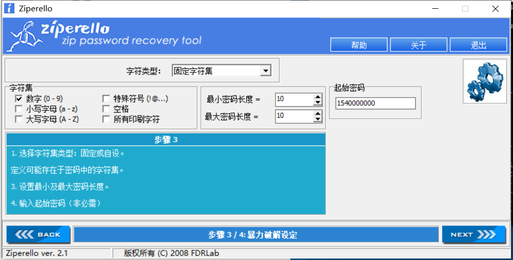
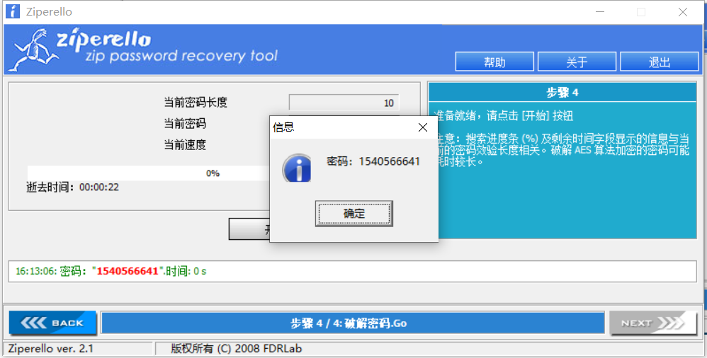
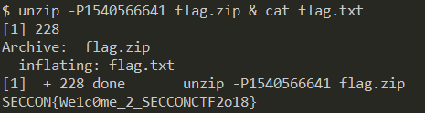
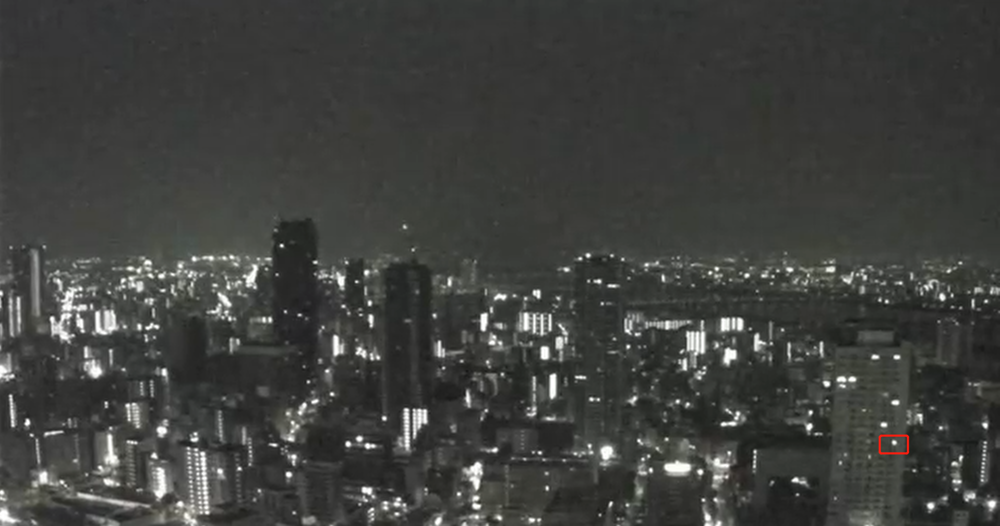
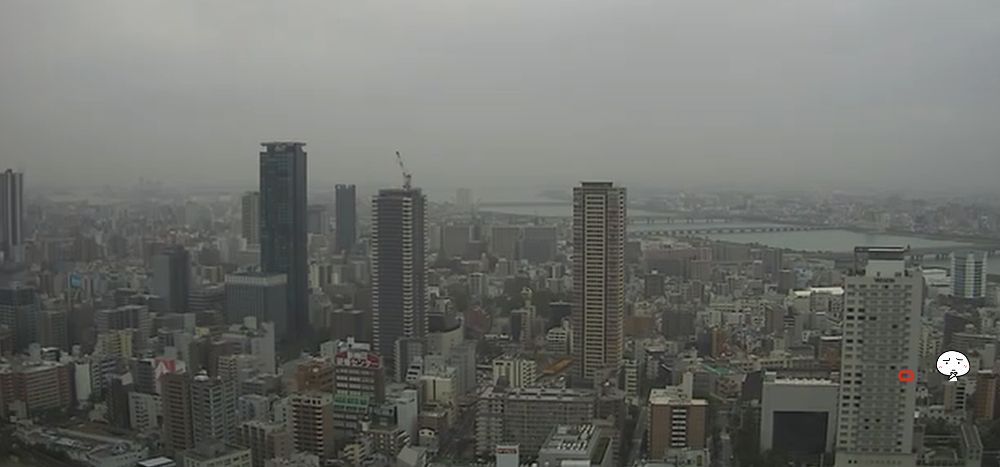
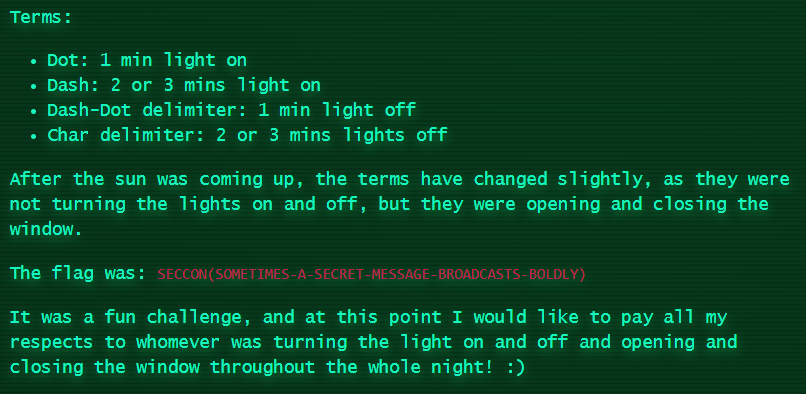

Forensics
Unzip
压缩命令为
1 | echo 'SECCON{'`cat key`'}' > flag.txt |
update:
###
比较棒的思路是flag.zip生成时刻的时间戳就是他的密码。那么
1 | $stat -c %Y flag.zip |
###
爆破密码：



History
1 | $ binwalk J |
Reversing
Runme
misc式的水题。就是不断跟进函数，每个函数传入一个参数，拼凑起来就可以了。会得到 "C:\Temp\SECCON2018Online.exe" SECCON{Runn1n6_P47h} 。
update:
###
比较骚的做法是直接strings
1 | $ strings runme |
###
Media
Needle in a haystack
提供一个YouTube的视频链接（https://www.youtube.com/watch?v=sTKP2btHSBQ ），长达九个多小时。
从 https://y2mate.com/youtube/sTKP2btHSBQ 下载360p的，差不多1.9G。快进查看会发现右下角有一个房间的灯亮灭很有规律，基本每分钟都会有变化。

我们把亮记为1，暗记为0的话，整个视频时长545分钟，可以得到约545比特的信息。大概是这样：
1 | 010101000100011101011101000111010111010001110111011100011101000111010111011101000101010001110111011100011101110001000111000101000111011100010001010100011101010101011100010111000111010101010111000101010001000111010111010001011101000100011100011101010101011100011101110001000101010001010100010111000111011101000100011101010101011100011101010100010111010001110111011100010111000111010100011101011101000101110001010100011100001010111000101010101000111000101010111000100010001110100010101110001010111010001010111000101000100011100010100010001010001111 |
其中有四种数据，0，1 ，000 ，111 ，分别对应亮、暗、长亮、长暗四种状态，对应到摩斯电码则是. ，短间隔，- ，长间隔 。
1 | # -*- coding: utf-8 -*- |
天亮后看得很不清晰了，而且貌似 6h58min 之后窗户都会间歇性地被关上，所以flag的后半段有点问题。

update:
###
实际上天亮以后用窗户的开关来表示，窗户打开为1，窗户关闭为0（正好和原来的处理方式01相反，所以得不到flag），思维太僵硬啊😂
那么就得到如下结果：
1 | 010101000100011101011101000111010111010001110111011100011101000111010111011101000101010001110111011100011101110001000111000101000111011100010001010100011101010101011100010111000111010101010111000101010001000111010111010001011101000100011100011101010101011100011101110001000101010001010100010111000111011101000100011101010101011100011101010100010111010001110111011100010111000111010100011101011101000101110001010100011100010101000111010101010111000111010101000111011101110001011101010001110101000101110101000111010111011100011101011101110101110000 |
这个图片解释得很到位了，不过我觉得徒手开关两个多小时的窗户太不黑客了吧，他们一定用了某种方式自动化。

###
update2:
###
有大佬做了自动化，效果蛮好的。
（https://ctf-writeups.ru/2k18/seccon-2018-online-ctf/needle_in_a_haystack/ ）
###